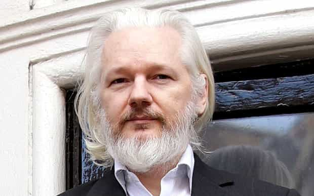
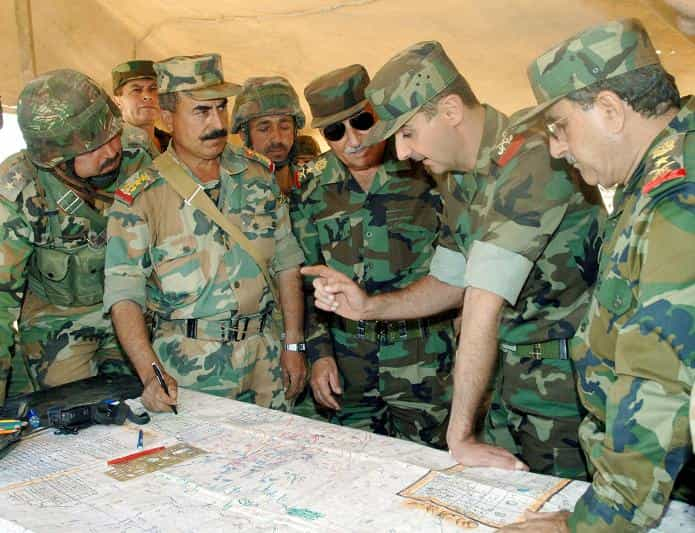

Corey is an iconoclast and the author of 'Man's Fight for Existence'. He believes that the key to life is for men to honour their primal nature. Visit his new website at primalexistence.com


2016 has been a turbulent year to say the least and it is during times of uncertainty that we see great men emerge above the rest.
I’ve chosen five prominent men of our times who either has shaped the world for the better or shown great leadership capabilities.

One of the biggest event of this year was the Brexit, and if there is one man who deserves the credit for leading the UK out of the EU, it is Nigel Farage.
Farage fought relentlessly against the EU for years and I’ve always admired his passion which he exercised without being pompous and crass. What is surprising is just how hostile the media had been towards him and his party as though they were racists or extremists. This, in spite of the fact that there’s nothing to suggest that Farage holds any “racist” or extremist views. He has managed to fight through the barrage of defamation efforts to emerge victorious in the end.
The fact that he has stepped down from his party after Brexit shows that he was truly fighting for his country alone and not for personal power or profit. Even though he was one of the major figures in the Brexit campaign, I don’t think he has gotten the full credit he deserves. Perhaps the future generation will grant him the historical recognition that he has earned.
First, I’ll come out and say that I don’t particularly like Trump (the fact that he’s already gone back against his words, hired Goldman Sachs executives, and shown his loyalty for the Zionists all suggests that we’ll be seeing much of the same old). My reserved “support” and cynical view of Trump has led me to disagreements with both his fans and detractors alike. However, in spite of all the aspects that I may not like about him, I recognize that: 1) You don’t have to agree with someone’s politics to recognize his strengths and achievements. 2) The other option, Hillary, would likely to cause full-blown conflict with Russia or its allies, leading to catastrophic consequences for the world. That said, no one knows knows for sure what kind of president Trump will be—not even himself, so I’ll focus solely on his presidential campaign.
Trump’s campaign was both historical and unprecedented. Not since Reagan was a non-establishment candidate able to capture the hopes and enthusiasm of so many Americans. And he did so with such energy that people were made to forget that he reached his 70th birthday this year. Compare that to the lackluster performance and feebleness of Jeb Bush who is several years younger than he.
Trump fought against all the political correct nonsense, the establishment, the mainstream media, the countless accusations and attack on his character, and so on. And like Farage before, he came out victorious in the end against all odds. For his symbolic victory against the leftists, he is one of the heroes of this year.

Julian Assange is an ordinary man fighting the lopsided battle against the global establishment. He’s already been trapped inside the Ecuadorian embassy for five years as a result of false rape accusations, and even his life there isn’t entirely safe and secure—all for exposing the crimes of the elites.
And as a result of being impartial to the information he releases, Assange doesn’t have a strong support from either the Left or the Right. For example, many of the liberals who saw him as a hero for his earlier leaks regarding the Iraq war now regards him as an enemy agent who conspired with the Russian hackers to help Clinton lose (of course, these liberals don’t seem to care about the content of the leak itself that exposed just how rotten and corrupt the DNC is). It’s clear that Assange really only cares about delivering the truth to the general public without worrying about winning approval. Some speculate that he’s helped Trump win in hopes that he’ll be granted an amnesty, but I doubt it. I think Assange fights for what he believes is right and releases whatever information he can.
I don’t think anyone else on this list made as much personal sacrifice as Assange has for a cause and I hope that he’s still alive and well (there’s been rumours that he’s been silenced, killed, or captured due to his lack of public appearance after his internet connection was severed.)

If there is one country in the world that is fighting against the globalist onslaught, it is Syria. The war there has been waging for almost six years now as American-Wahhabi-Zionist axis along with their allies have been flooding the country with Islamic terrorists and giving them weapons and diplomatic support in an attempt to destroy the secular nation that had previously been stable and growing.
Leading the Syrian nation’s fight for existence is Bashar Al-Assad, who, in addition to fighting ISIS and other Islamic militants at home, faces international criticism as a “brutal dictator” who needs to be removed. It’s quite telling when an elected Arab leader who defends Christians and other minorities is being accused of war crimes by Western nations that are backing the “moderate” rebels who are really nothing but head-chopping Jihadists and Al-Qaeda offshoots. If you want to know the kind of leader Assad really is, just watch him speak for yourself:
Besides Assad, the Syrian people, the Syrian Arab Army, and other allied groups including Russia, Hezbollah, and Quds force from Iran also deserve mention for fighting against ISIS and other Islamists, something they will never get credit for by the West.
Last, we have Vladmir Putin who has been leading the Russian nation against the globalists and the cancerous Western influence that is wrecking the world. Like the other men listed here, Putin has been on the receiving end of relentless media attack to defame him as a corrupt and tyrannical ruler and even a war criminal. He has become the boogie man in the West used to blame everything from the US election results to the war deaths in Syria, as well as serving as an excuse for NATO to expand to the East even when it is the US that is to be blamed for re-starting the Cold War.
Putin’s role in making Russia the main resisting force against the globalists and a stabilizing influence in the world is wholly unappreciated. It was Putin who stepped in to stop the West from completely destroying Syria as they had done with Libya, it was with the help of Russian airforce that the Syrian armed forces were able to achieve the victory they did this year, it was Putin who maintained his cool and tamed Turkey so that the two countries could work together even after Turkey downed one of its aircraft. You can tell just how much the world is stacked up against Putin and Russia by how the Western media has been silent on Russia’s humanitarian aid to Syria and the death of Russian paramedics in the hands of the “moderate” rebels even as the West lies and sheds crocodile tears about the situation in Aleppo.
Some people still hate Putin because they see him as the enemy of America and a threat to the West, but these people need to realize that it was not Putin’s decision to stir conflicts. He’s merely been reacting to the West’s efforts to undermine Russia. It is the US and its allies that chose to be Russia’s enemy, not the other way around. And if the West continues to expand its globalist influence around the world, Putin’s Russia will continue to fight back against it.
We have heroes not just so that they may lead us, but so that we be inspired by them. We shouldn’t merely worship great men, but strive to be one ourselves. Because no matter how great, an individual man by himself cannot change the world. All the men above did not act alone but had others who followed their lead. If you are truly interested in changing the world, you must become one yourself.
Read More: 4 Reasons Why Assad Must Win The Syrian War